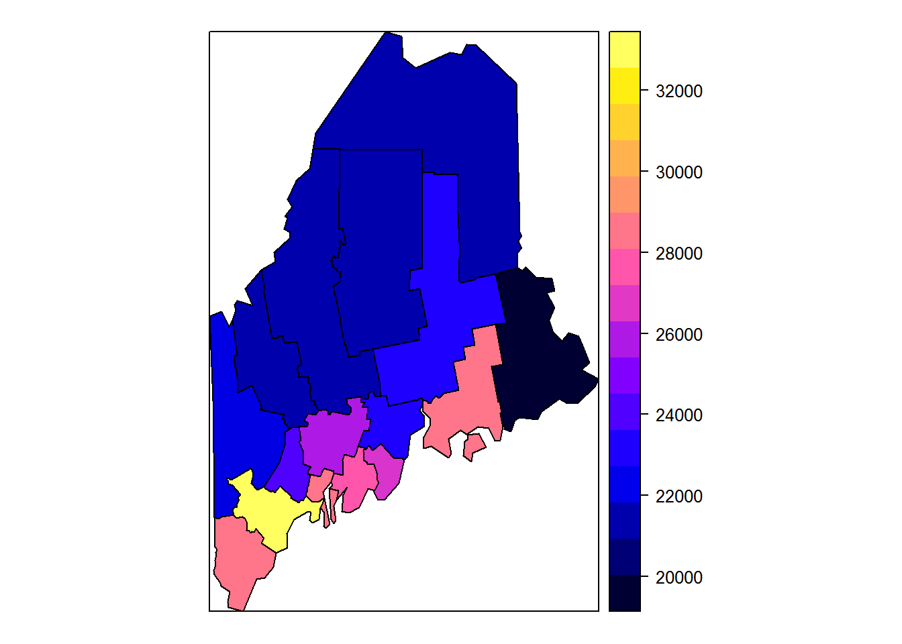
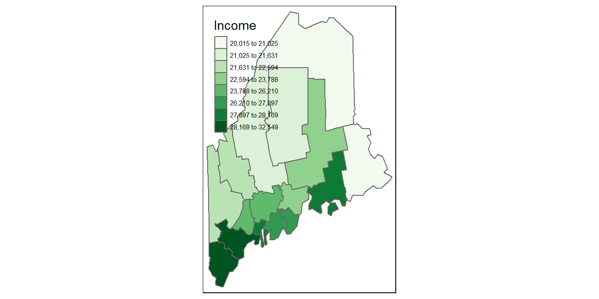
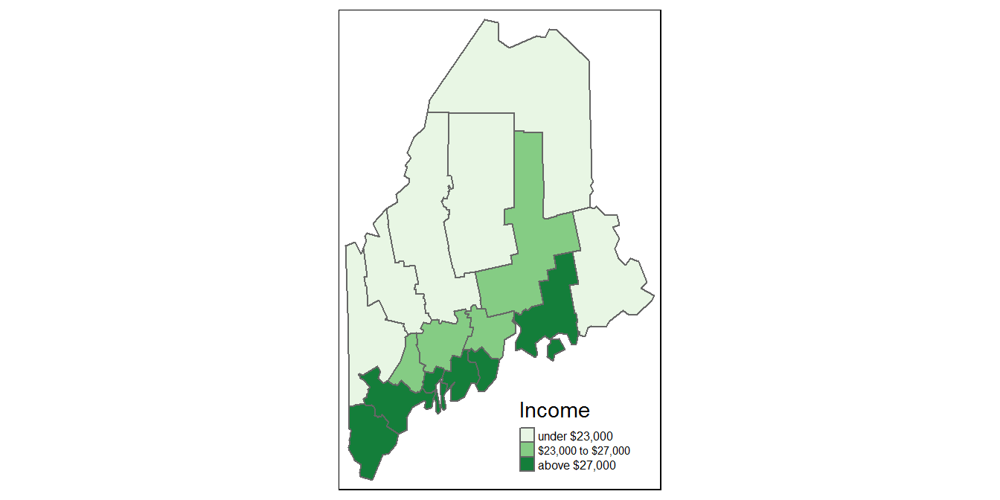
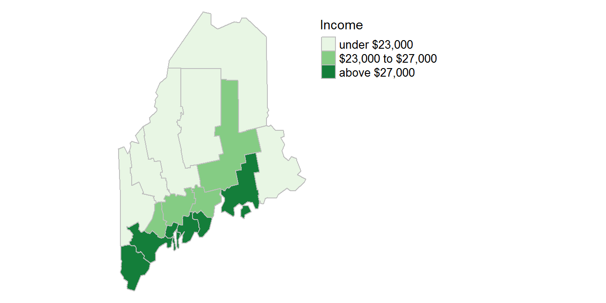
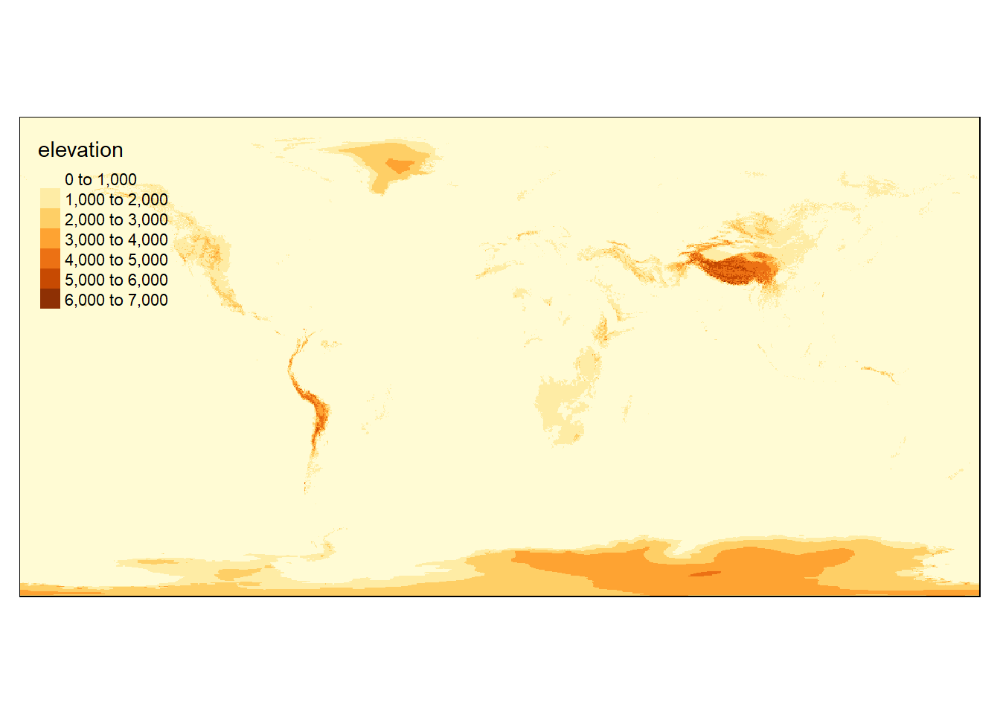
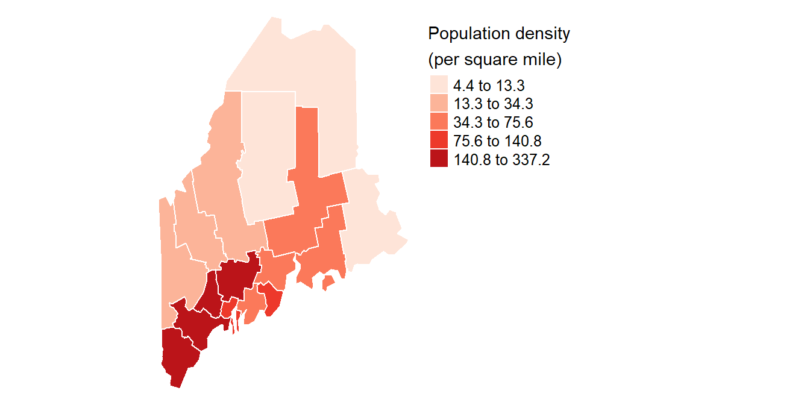
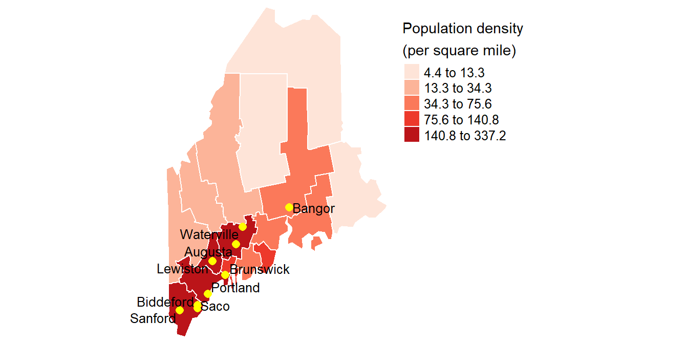
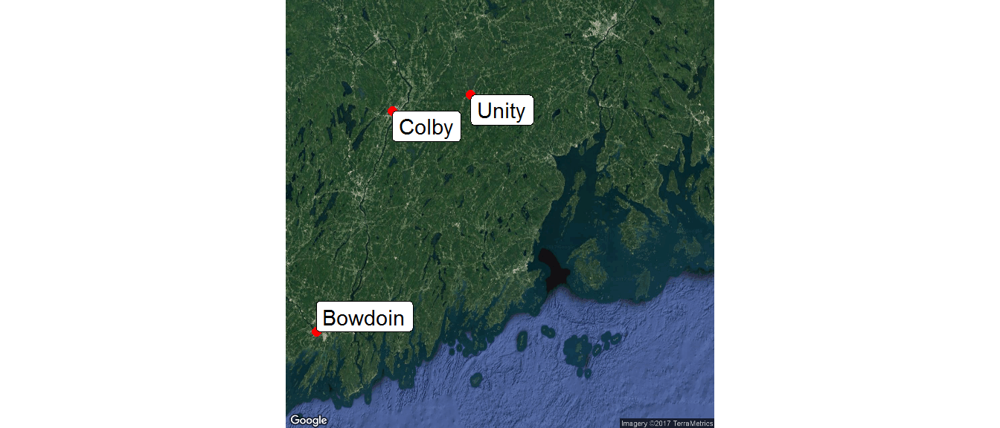

Data Manipulation in R
Reading vector files
First, we’ll load sample spatial data files into the current working directory (you might want to create a temporary folder for this exercise and set it as the working directory via the Session >> Set Working Directory >> Choose Directory pull-down menu from the RStudio interface).
The following chunk will download and unzip a zipped shapefile into the current working directory.
tmp <- tempfile()
download.file("http://colby.edu/~mgimond/Spatial/Data/Income_schooling.zip", destfile = tmp)
unzip(tmp, exdir = ".")The first line of code creates a temporary file on your machine to house the zip file. The second line of code downloads the zip file into the temporary file. The third line unzips the zip file into the current working directory. You should see the six files that constitute the shapefile:
[1] "Income_schooling.dbf" "Income_schooling.prj" "Income_schooling.sbn"
[4] "Income_schooling.sbx" "Income_schooling.shp" "Income_schooling.shx"
[7] "Income_schooling.zip"The following chunk of code will download a GeoPackage file into the current working directory. Note that the file is not zipped thus eliminating any need to unzip (unlike a shapefile, a GeoPackage data file is self-contained).
download.file("http://colby.edu/~mgimond/Spatial/Data/TX.gpkg", destfile = "./TX.gpkg", mode="wb")14.2.3 Reading a shapefile with rgdal
There are two different ways one can load a shapefile into R: using the rgdal package and using the maptools package. The difference between both methods is that the rgdal option loads the coordinate system (CS) information (if present in the shapefile) while maptools does not.
The function readOGR() from rgdal is used to load the shapefile.
library(rgdal)
s1 <- readOGR(".", "Income_schooling")OGR data source with driver: ESRI Shapefile
Source: ".", layer: "Income_schooling"
with 16 features
It has 5 fieldsThe "." parameter tells R to look for the shapefile in the current working directory, the second parameter tells R the name of the shapefile to open. Note that you must not add a file extension to the name as this will generate an error message.
Let’s check the contents of this shapefile.
summary(s1)Object of class SpatialPolygonsDataFrame
Coordinates:
min max
x 336337.7 660529.1
y 4772272.3 5255569.2
Is projected: TRUE
proj4string :
[+proj=utm +zone=19 +datum=NAD83 +units=m +no_defs +ellps=GRS80
+towgs84=0,0,0]
Data attributes:
NAME Income NoSchool NoSchoolSE
Androscoggin: 1 Min. :20015 Min. :0.002390 Min. :0.0006832
Aroostook : 1 1st Qu.:21631 1st Qu.:0.004907 1st Qu.:0.0009130
Cumberland : 1 Median :23788 Median :0.005252 Median :0.0010281
Franklin : 1 Mean :24716 Mean :0.005778 Mean :0.0011658
Hancock : 1 3rd Qu.:27897 3rd Qu.:0.006603 3rd Qu.:0.0013404
Kennebec : 1 Max. :32549 Max. :0.013387 Max. :0.0021290
(Other) :10
IncomeSE
Min. :242.4
1st Qu.:342.6
Median :455.8
Mean :458.8
3rd Qu.:551.5
Max. :724.2
Note the coordinate information under the proj4string : heading. It suggests that the CS is a UTM projection for zone 19 (north) and an NAD83 datum.
14.2.4 Reading a shapefile with maptools
Here, we’ll use readShapeSpatial() from maptools to load the shapefile.
library(maptools)
s2 <- readShapeSpatial("Income_schooling")Let’s check the contents of this shapefile.
summary(s2)Object of class SpatialPolygonsDataFrame
Coordinates:
min max
x 336337.7 660529.1
y 4772272.3 5255569.2
Is projected: NA
proj4string : [NA]
Data attributes:
NAME Income NoSchool NoSchoolSE
Androscoggin: 1 Min. :20015 Min. :0.002390 Min. :0.0006832
Aroostook : 1 1st Qu.:21631 1st Qu.:0.004907 1st Qu.:0.0009130
Cumberland : 1 Median :23788 Median :0.005252 Median :0.0010281
Franklin : 1 Mean :24716 Mean :0.005778 Mean :0.0011658
Hancock : 1 3rd Qu.:27897 3rd Qu.:0.006603 3rd Qu.:0.0013404
Kennebec : 1 Max. :32549 Max. :0.013387 Max. :0.0021290
(Other) :10
IncomeSE
Min. :242.4
1st Qu.:342.6
Median :455.8
Mean :458.8
3rd Qu.:551.5
Max. :724.2
s2’s summary output is nearly identical to that of s1 except for the missing CS (the summary indicates that Is projected: NA, i.e. that there is no projection information).
14.2.5 Reading a GeoPackage
A GeoPackage can be read with the rgdal package. A GeoPackage is a spatial database that can store more than one layer. This requires knowledge of the layer name which may be different from database filename. You can extract the layer name(s) from a GeoPackage as follows:
library(rgdal)
ogrListLayers("TX.gpkg")[1][1] "TX"The TX.gpkg file has a single layer called TX. To extract the layer TX into a new spatial object called s3, type:
s3 <- readOGR("TX.gpkg", layer="TX")OGR data source with driver: GPKG
Source: "TX.gpkg", layer: "TX"
with 1 features
It has 49 fieldsReading GIS raster files
First, we’ll load a sample raster file into your current working directory (you might want to create a temporary folder for this exercise and set it as the working directory via the Session >> Set Working Directory >> Choose Directory pull-down menu from the RStudio interface). The raster file will be in an ERDAS Imagine format.
download.file("http://colby.edu/~mgimond/Spatial/Data/elevation.img",
destfile = "./elevation.img", mode = "wb")Raster files can be read with rgdal’s readGDAL() function or with raster’s raster() function. They differ in the output formats and in the way the data are managed in an R session–readGDAL will load the raster as a SpatialGridDataFrame object whereas raster will load the data as a raster* object and raster will not load the entire raster into memory whereas readGDAL will making raster’s approach attractive if large rasters are to be worked with. If you wish to load all data from a raster object in R memory, wrap the raster object withreadAll as in r1 <- readAll(r).
In the following example, we’ll load the raster as a raster* object.
library(raster)
r1 <- raster("elevation.img")To view the contents of the newly created r1 raster object, type its name at the command line.
r1class : RasterLayer
dimensions : 540, 1080, 583200 (nrow, ncol, ncell)
resolution : 0.3333333, 0.3333333 (x, y)
extent : -180, 180, -90, 90 (xmin, xmax, ymin, ymax)
coord. ref. : +proj=longlat +ellps=WGS84 +towgs84=0,0,0,0,0,0,0 +no_defs
data source : D:\mgimond\GitHub\Spatial\elevation.img
names : elevation
values : 0, 6821 (min, max)You’ll note that the object is of class RasterLayer. You’ll also note that the coordinate system information stored in the original raster has been carried over into the r1 object.
The raster function will recognize many difference raster formats including GeoTIFF and jpg.
Dissecting the file summary
Let’s explore the contents of s1’s summary.
summary(s1)Object of class SpatialPolygonsDataFrame
Coordinates:
min max
x 336337.7 660529.1
y 4772272.3 5255569.2
Is projected: TRUE
proj4string :
[+proj=utm +zone=19 +datum=NAD83 +units=m +no_defs +ellps=GRS80
+towgs84=0,0,0]
Data attributes:
NAME Income NoSchool NoSchoolSE
Androscoggin: 1 Min. :20015 Min. :0.002390 Min. :0.0006832
Aroostook : 1 1st Qu.:21631 1st Qu.:0.004907 1st Qu.:0.0009130
Cumberland : 1 Median :23788 Median :0.005252 Median :0.0010281
Franklin : 1 Mean :24716 Mean :0.005778 Mean :0.0011658
Hancock : 1 3rd Qu.:27897 3rd Qu.:0.006603 3rd Qu.:0.0013404
Kennebec : 1 Max. :32549 Max. :0.013387 Max. :0.0021290
(Other) :10
IncomeSE
Min. :242.4
1st Qu.:342.6
Median :455.8
Mean :458.8
3rd Qu.:551.5
Max. :724.2
The first line of output gives us the spatial object type, SpatialPolygonsDataFrame. It suggests that the shapefile is a polygon layer and that it has an attributes tables (hence the segment DataFrame in the object name). If this were a polyline layer the object type would be SpatialLinesDataFrame and if it were a point layer the object type would be SpatialPointsDataFrame.
The next few lines of output give us the bounding extent of the layer in the layer’s coordinate system units.
Coordinates:
min max
x 336337.7 660529.1
y 4772272.3 5255569.2The three lines that follow give us the projection information. Note, once again, that this information is absent if you loaded the data via maptools.
Is projected: TRUE
proj4string :
[+proj=utm +zone=19 +datum=NAD83 +units=m +no_defs +ellps=GRS80 +towgs84=0,0,0]What remains of the output is a summary of each column in the attributes table. There are 5 columns named .
You can also extract the column names via the names function:
names(s1)[1] "NAME" "Income" "NoSchool" "NoSchoolSE" "IncomeSE" If you want to extract the contents of the attributes tables, use the data.frame function.
data.frame(s1) NAME Income NoSchool NoSchoolSE IncomeSE
0 Aroostook 21024 0.01338720 0.001406960 250.909
1 Somerset 21025 0.00521153 0.001150020 390.909
2 Piscataquis 21292 0.00633830 0.002128960 724.242
3 Penobscot 23307 0.00684534 0.001025450 242.424
4 Washington 20015 0.00478188 0.000966036 327.273
5 Franklin 21744 0.00508507 0.001641740 530.909
6 Oxford 21885 0.00700822 0.001318160 536.970
7 Waldo 23020 0.00498141 0.000918837 450.909
8 Kennebec 25652 0.00570358 0.000917087 360.000
9 Androscoggin 24268 0.00830953 0.001178660 460.606
10 Hancock 28071 0.00238996 0.000784584 585.455
11 Knox 27141 0.00652269 0.001863920 684.849
12 Lincoln 27839 0.00278315 0.001030800 571.515
13 Cumberland 32549 0.00494917 0.000683236 346.061
14 Sagadahoc 28122 0.00285524 0.000900782 544.849
15 York 28496 0.00529228 0.000737195 332.121Mapping spatial data
There are many ways one can plot spatial features in R. We’ll explore two approaches: one using sp’s spplot, the second using the tmap package.
14.2.6 Mapping with spplot
spplot is a base plotting function that is part of the sp package. Note that sp underlies many other packages including maptools and rgdal.
To simply plot the Income attribute, type:
spplot(s1, z="Income")
The resulting map is referred to as a choropleth map (choro = area and pleth = value) where some value (an enumeration of population in this working example) is aggregated over a defined area (e.g.counties) and displayed using different colors.
We can control how the attribute values are binned and which colors to assign to each bin. We will use the function classIntervals to generate the breaks following a quantile scheme. The classIntervals’s minimum and maximum values will be the range of values from the Income attribute. This poses a problem since the spplot function will interpret that maximum value as not being inclusive which will result in the polygon having the maximum attribute value not being assigned a color. To remedy this, we will pad the maximum value with the value of 0.1.
We will also use the RColorBrewer package to generate the different color swatches: In our working example, we will generate four different shades of green. The code chunk and resulting map follow:
library(classInt)
library(RColorBrewer)
# Generate breaks
brks <- classIntervals(s1$Income, n = 4, style = "quantile")$brks
brks[length(brks)] <- brks[length(brks)] + 1
# Define color swatches
pal <- brewer.pal(4, "Greens")
# Generate the map
spplot(s1, z="Income", at = brks, col.regions=pal)
Note how we are able to extract the Income column via s1$Income which is passed to the classIntervals function (which, in turn, uses these values to compute the breaks). The breaks are stored in the object brks; its contents are 20015.0, 21631.0, 23787.5, 27897.0, 32550.0.
A nice feature of spplot is its legend: instead of generating discrete color swatches (with associated value ranges) ssplot generates contiguous color swatches along a scale which provides us with not only information on the ranges covered by the colors but a visual on the distribution of these bins.
14.2.7 Mapping with tmap
The tmap package is designed to map thematic data. The following chunk recreates the map generated with spplot.
library(tmap)
qtm(s1, fill="Income", fill.style="quantile",
fill.n=8 ,fill.palette="Greens")
The fill.style parameter defines the binning scheme. Here we choose a quantile scheme. Other options include equal (equal interval), jenks (same scheme ArcMap defaults to), sd (breaks the data into standard deviations), kmeans (based on the kmeans method), and pretty to name a few. If you want to manually define your breaks, you can pass the option fixed to the fill.style parameter then pass the desired breaks to the breaks parameter. For example, to break the data into 3 bins–under $23,000, $23,000 to $27,000 and $27,000 and greater– modify the above chunk as follows.
library(tmap)
qtm(s1, fill="Income", fill.style="fixed",
fill.breaks=c(0,23000 ,27000,100000 ),
fill.labels=c("under $23,000", "$23,000 to $27,000", "above $27,000"),
fill.palette="Greens",
legend.text.size = 0.5,
layout.legend.position = c("right", "bottom"))
If a more complex map is desired, the plotting functions can be broken down into elements (similar to ggplot2’s plotting elements). The last block of code can be modified as follows:
tm_shape(s1) +
tm_fill("Income", style="fixed", breaks=c(0,23000 ,27000,100000 ),
labels=c("under $23,000", "$23,000 to $27,000", "above $27,000"),
palette="Greens") +
tm_borders("grey") +
tm_legend(outside = TRUE, text.size = .8) +
tm_layout(frame = FALSE)
Here, we move the legend element to the right of the map data frame and we suppress the drawing of the map border.
14.2.8 Mapping rasters with tmap
To generate a quick map, simply use the qtm function.
qtm(r1)
The next chunk of code overlays the raster with a vector layer and limits the extent to the northeastern US. To maximize the use of colors, elevation breaks are manually defined.
tm_shape(r1, ylim = c(30,50), xlim=c(-100,-50)) +
tm_raster(breaks=c(0,100,200,300,400,500,750,1000,1500,2000,3000,4000)) +
tm_shape(s1) +
tm_fill("Income", style="fixed", breaks=c(0,23000 ,27000,100000 ),
labels=c("under $23,000", "$23,000 to $27,000", "above $27,000"),
palette="Greens") +
tm_borders("grey") +
tm_legend(outside = TRUE, text.size = .8) +
tm_layout(frame = FALSE)
To learn more about the tmap package, check out the package vignette and the package author’s presentation.
Joining tables to spatial features
First, we’ll download a comma delimited table (aka a CSV file). The table consists of population count and land/water surface area for each county in the state of Maine.
df <- read.csv("http://colby.edu/~mgimond/Spatial/Data/ME2010_pop.csv")Next, we’ll make use of dplyr’s left_join function to join the table to the spatial object s1 by county name.
library(dplyr)
s1@data <- left_join(s1@data, df, by=c("NAME" = "County"))The spatial object s1 consists of many components including the attributes table. Accessing each component requires appending the object name with @. In our case, we are accessing the attributes table (stored in the data component) via s1@data. In essence, the above code is joining the data table df to the attributes table s1@data and overwriting the existing attributes table (with the join) in the process. The function is also provided with a join key that dictates which columns from each table are to be used to match the records. Here, we are matching s1’s NAME column with df’s County column (both store the county names).
For a join to be successful, all record elements must match letter for letter–this includes case! For example Kennebec and kennebec will not match since one has an upper case K while the other does not.
Attribute tables can be manipulated just like any other regular table in R. For example, to compute population density from the population field and the land area field, type the following.
s1$Pop_dens = s1$Population / s1$LandThe $ symbol accesses the field names Population and Land. The new field Pop_dens is now added to the s1 attributes table. Next, we’ll map the population density values.
tm_shape(s1) +
tm_fill("Pop_dens", style="quantile", palette="Reds",
title="Population density \n(per square mile)") +
tm_borders("white") +
tm_legend(outside = TRUE, text.size = .8) +
tm_layout(frame = FALSE)
Converting XY data to point objects
Let’s create a new data table with latitude and longitude values for nine major cities in the state of Maine.
df2 <- data.frame(lon = c(-68.783, -69.6458, -69.7653, -69.9536,
-70.7733, -70.4462, -70.4449, -70.1924, -70.2691),
lat = c(44.8109, 44.5521, 44.3235, 43.913,
43.4399, 43.4741, 43.5104, 44.0975, 43.6651 ),
Name = c("Bangor", "Waterville", "Augusta", "Brunswick",
"Sanford", "Biddeford", "Saco", "Lewiston", "Portland") )Next, we’ll create a spatial object (a SpatialPointsDataFrame to be more precise) from the regular data table.
pt <- SpatialPointsDataFrame(coords = df2[,c("lon","lat")], data = df2,
proj4string = CRS("+proj=longlat +datum=WGS84"))The coords parameter is given the latitude and longitude value columns–values used to locate the points associated with each record. The proj4string parameter defines the coordinate systems associated with the lat/long values–a WGS 1984 Geographic Coordinate System in our example.
Let’s check that pt is indeed a spatial object.
summary(pt) Object of class SpatialPointsDataFrame
Coordinates:
min max
lon -70.7733 -68.7830
lat 43.4399 44.8109
Is projected: FALSE
proj4string :
[+proj=longlat +datum=WGS84 +ellps=WGS84 +towgs84=0,0,0]
Number of points: 9
Data attributes:
lon lat Name
Min. :-70.77 Min. :43.44 Augusta :1
1st Qu.:-70.44 1st Qu.:43.51 Bangor :1
Median :-70.19 Median :43.91 Biddeford:1
Mean :-70.03 Mean :43.98 Brunswick:1
3rd Qu.:-69.77 3rd Qu.:44.32 Lewiston :1
Max. :-68.78 Max. :44.81 Portland :1
(Other) :3 Note the object class SpatialPointsDataFrame. Also note that the dataframe contents were also carried over into the attributes table (here we had just one attribute, Name, other than lon and lat).
The next chunk of code plots the point layer on top of the population density thematic map.
tm_shape(s1) +
tm_fill("Pop_dens", style="quantile", palette="Reds",
title="Population density \n(per square mile)") +
tm_borders("white") +
tm_legend(outside = TRUE, text.size = .8) +
tm_layout(frame = FALSE,
inner.margins = c(0, 0.25, 0, 0.01)) +
tm_shape(pt) +
tm_dots(size=.3, col="yellow", border.col="black") +
tm_text("Name", auto.placement = TRUE, shadow=TRUE, size=0.8)
Geocoding street addresses
The package ggmap offers a geocoding function called mutate_geocode which will take a table with physical addresses and create a new table with latitude and longitude values for those addresses. The new table also contains all other columns of the input table. The function makes use of Google Maps’ API.
Let’s first create a new data table with addresses for a few liberal arts colleges in the state of Maine.
df3 <- data.frame(Address = c("4000 mayflower Hill, Waterville, Maine",
"2 Andrews Rd, Lewiston, ME 04240",
"255 Maine St, Brunswick, ME 04011",
"90 Quaker Hill Rd, Unity, ME 04988",
"105 Eden St, Bar Harbor, ME 04609"),
College = c("Colby", "Bates", "Bowdoin", "Unity", "CoA"),
stringsAsFactors = FALSE)Next, we’ll geocode the addresses and save the output to a new data table called df3.geo.
library(ggmap)
df3.geo <- mutate_geocode(df3, location=Address, output="latlona" )The location parameter is assigned the column with the addresses. The output parameter is given instructions on what to output. Here, the option latlona instructs R to output both the lat/lon values as well as all other attributes. It also adds another column called address with Google’s nearest address match–not all addresses are necessarily matched exactly requiring Google to propose the closest match.
df3.geo Address College lon lat
1 4000 mayflower Hill, Waterville, Maine Colby -69.65321 44.55605
2 2 Andrews Rd, Lewiston, ME 04240 Bates -70.20420 44.10675
3 255 Maine St, Brunswick, ME 04011 Bowdoin -69.96524 43.90701
4 90 Quaker Hill Rd, Unity, ME 04988 Unity -69.33084 44.60335
5 105 Eden St, Bar Harbor, ME 04609 CoA -68.22182 44.39536
address
1 mayflower hill dr, waterville, me 04901, usa
2 2 andrews rd, lewiston, me 04240, usa
3 255 maine st, brunswick, me 04011, usa
4 90 quaker hill rd, unity, me 04988, usa
5 105 eden st, bar harbor, me 04609, usaIn our little example, all addresses are matched exactly except Colby which is assigned mayflower hill dr without a number.
Note that the Google Maps API sets the limit to 2500 queries a day. To check how many queries you have left in your session, use geocodeQueryCheck.
geocodeQueryCheck()2495 geocoding queries remaining.Note that df2.geo is not a spatial object. It needs to be converted to one if it is to be used in generating a map output. The lat/lon values are assumed to be recorded in a WGS84 geographic coordinate system.
pt2 <- SpatialPointsDataFrame(coords = df3.geo[,c("lon","lat")], data = df3.geo,
proj4string = CRS("+proj=longlat +datum=WGS84"))Finally, we’ll add the points to an existing thematic map.
tm_shape(s1) +
tm_fill("Pop_dens", style="quantile", palette="Reds",
title="Population density \n(per square mile)") +
tm_borders("white") +
tm_legend(outside = TRUE, text.size = .8) +
tm_layout(frame = FALSE,
inner.margins = c(0, 0.25, 0, 0.01)) +
tm_shape(pt2) +
tm_dots(size=.3, col="yellow", border.col="black") +
tm_text("College", auto.placement = TRUE, shadow=TRUE, size=0.8)
If you wish to use Google Maps as a backdrop, you can map the points with ggmap’s qmplot function.
qmplot(lon, lat, data=df3.geo, source="osm") +
geom_point(col="red", size=2, show.legend = FALSE) +
geom_label(aes(label=College), hjust = "inward", vjust="inward")
Exporting to a shapefile
Both rgdal and maptools have functions to export spatial objects to shapefiles, but only rgdal will export the coordinate systems (if present) with the shapefile. The following chunk of code demonstrates the exports of two spatial objects created earlier in this exercise: s1 (a SpatialPolygonsDataFrame object) and pt2 (a SpatialPointsDataFrame).
library(rgdal)
# Save polygon layer to shapefile
writeOGR(s1, dsn=".", layer="Counties", driver="ESRI Shapefile" )
# Save point layer to shapefile
writeOGR(pt2, dsn=".", layer="Colleges", driver="ESRI Shapefile" )The layer="Colleges" parameter defines the file names (note that the file extension is not specified since it will be automatically added based on the output format) and the driver parameter specifies the output file format.
Exporting to a GeoPackage
rgdal’s GPKG driver is used to export to a GeoPackage format. The syntax is slightly different from that used to export to a shapefile in that the database name must be specified as well as the layer name. For example, the following chunk of code exports the Counties layer to a database named geo.gpkg
library(rgdal)
# Save polygon layer to shapefile
writeOGR(s1, dsn="geo.gpkg", layer="Counties", driver="GPKG" )Exporting to a raster file format
You may use raster’s writeRaster function to export rasters to external raster formats. For example, to export to a GeoTIFF raster:
library(rgdal)
writeRaster(r1, filename="elev", format="GTiff" )To export to an ERDAS Imagine file format:
library(rgdal)
writeRaster(r1, filename="elev", format="HFA" )To list all available output raster file formats, type:
writeFormats()